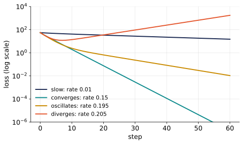
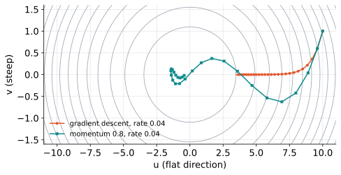

A node computes y = A x with A of shape 4 × 6, and receives the upstream gradient g = ∂L/∂y. What does its backward pass add to x's gradient?
| Reference engine, solution run | Result |
|---|---|
| Test suite | 10 of 10 |
| Against central differences, 50 random expressions, worst | 3e-9 |
| Against PyTorch, Lab 3.1 loss | 6e-16 |
| Against PyTorch, ten random expressions, worst | 3e-13 |
Overwriting in multiplication broke 6 of the 10 tests: every graph where a node reaches the output along more than one path.
w ← w − η ∇L(w)
From week 2: −∇L is the steepest way down, and the local line promises a fall of about η |∇L|².
The promise holds only while the step is small enough for the line to be right. The rate η decides that.
A rate that is too small wastes thousands of steps; one that is too large overshoots the valley and climbs out of it. Neither shows in the code: both show in the loss curve.
L = ½ Σ λᵢ uᵢ², one step multiplies each uᵢ by 1 − η λᵢ.
A least-squares loss has curvatures (eigenvalues of AᵀA / n) from 0.05 to 4. The analyst sweeps the rate over 0.01, 0.1, 0.4 and 0.6 with full-batch gradient descent. Which runs diverge?
b = 1 is stochastic gradient descent in its first form; b = n is full batch. Larger b: less noise per step, more cost per step. The lab uses b = 32.
v ← β v + ∇L(w)w ← w − η v
Steps that agree add up, to about η / (1 − β) in a steady slope; steps that flip sign cancel. With β = 0.9 it averages about the last ten gradients.

Keep running averages of g and g². Step each coordinate by η · m̂ / (√v̂ + ε): about η per coordinate whatever the gradient's scale. Common defaults: β₁ = 0.9, β₂ = 0.999.
Warm-up: start small for the first steps, when gradients are large and erratic. Decay: shrink the rate later, to narrow the noise band. Step, cosine and linear decays are all in use.
Plain gradient descent at its largest stable rate zigzags across a narrow valley and crawls along it. The analyst adds momentum with β = 0.9 and keeps the rate. What should she expect first?
| The curve | Diagnosis | Likely cause | First fix |
|---|---|---|---|
| Grows, or turns into NaN | diverged | η above 2 / λ_max | divide η by 3 to 10 |
| Falls fast, then crawls far above the best | slow | η too small for λ_min; unscaled features | scale features; raise η; momentum |
| Falls, then a wide band that never narrows | noisy | small batch at a large constant η | decay the rate; larger batch |
| Saw-tooth on the way down | near the edge | η close to 2 / λ_max | lower η a little |
| Smooth fall to the reference | converged | keep it, and log it |
variant,learning_rate,seed,epochs_run,final_loss,diagnosis
batch,0.5,0,200,...,converged
batch,2.0,0,57,inf,divergedOn a dataset of household energy use, a run on raw, unscaled features falls from 900 to 520 in ten epochs, then sits near 500 for 190 more. The least-squares loss is 3. Any larger rate diverges. What is the diagnosis?
labs/problem_sets/PS5.py.cd labs
uv run python problem_sets/check.py PS5The steepest curvature sets the largest stable rate; the flattest sets how slow it is.
Mini-batches trade exactness for cheap steps; momentum averages steps; schedules shrink the noise band.
Diagnose from the loss curve on a log scale, and log every run with its rate and seed.
Hand in Problem set 5. Keep your experiment log: week 6 explains its curvatures with the Hessian.